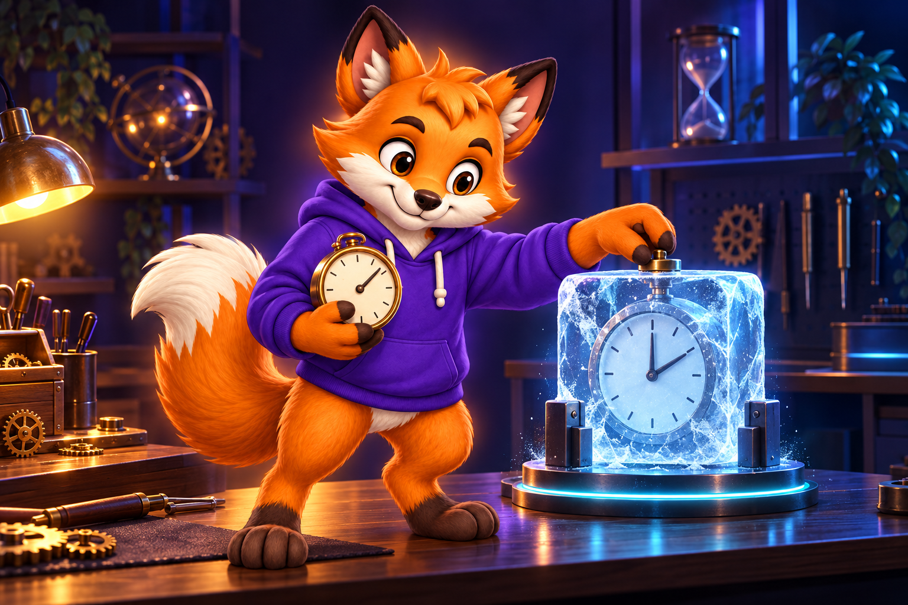
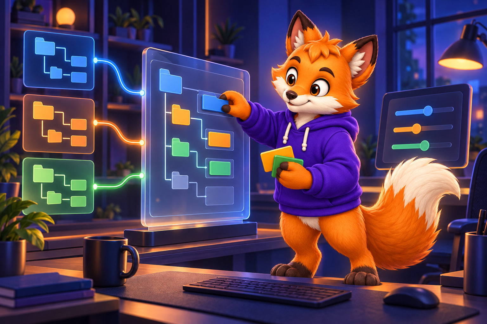
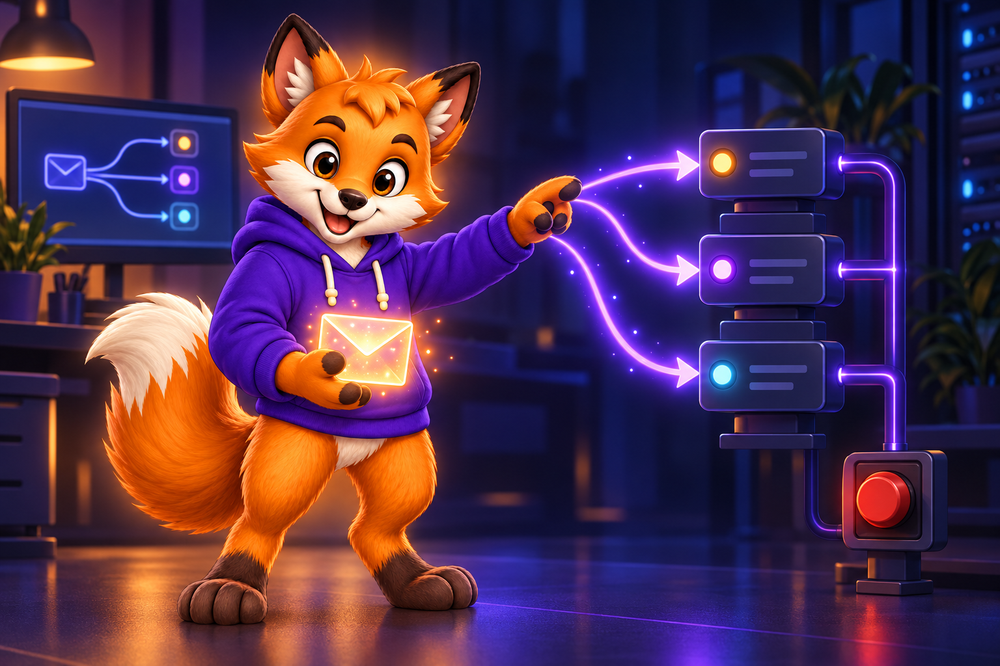
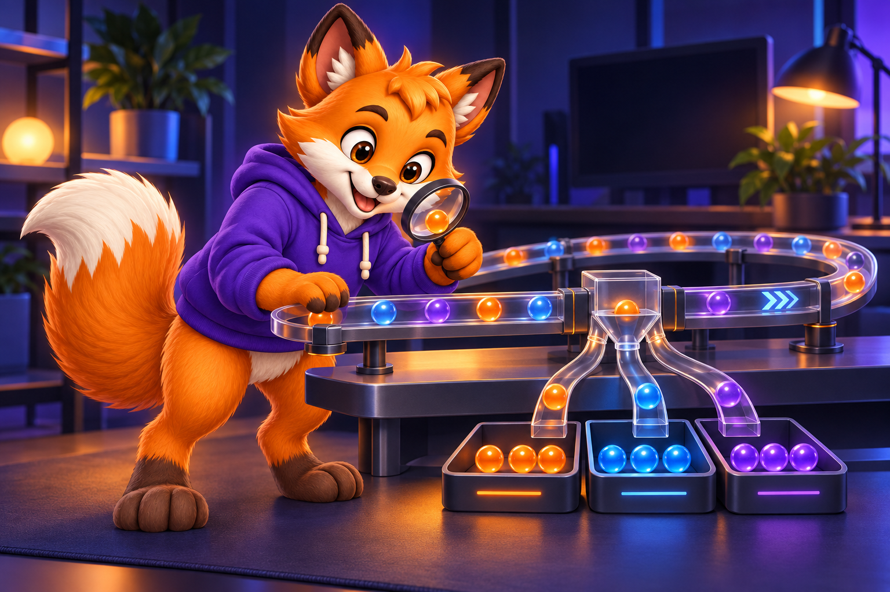

Developer collection · 19 contextual applications
Dash across the ecosystem.
A different job in every repository. These reviewed scenes connect Dash to reusable resources, time, services, web messages and the tools that keep development moving.
A familiar developer, with a purpose.
Character anatomy follows the developer welcome/build references. Each scene explains a repository's context through its pose, props and composition.

A library of reusable roles
Dash organizes reusable agent roles and skill resources.


Fragments become release history
Dash consolidates release fragments into a history ledger.



Live time and frozen time
Dash contrasts live and frozen clocks for deterministic tests.


Resources arrive in the right folder
Dash copies declared resource-bundle payloads into a target folder.



Many sources, one settings tree
Dash combines configuration sources into a nested settings tree.


Services, ready to resolve
Dash resolves service components from an aggregate registry.


Cleanup follows the stack
Dash performs deferred scope cleanup in reverse stack order.


A clear set of choices
Dash organizes a finite set of typed choices.



One event, ordered listeners
Dash routes a named event through ordered listeners.


A parent and its workers
Dash coordinates child processes and collected outputs.


A foundation that connects
Dash connects framework components through a shared bootstrap.


Reusable stages in motion
Dash connects reusable workflow stages in CI automation.


The web stack comes together
Dash assembles message, factory and client components.


A request and its response
Dash exchanges request and response envelopes.


A workshop for HTTP objects
Dash builds request, response, stream and URI objects.


Inside an immutable message
Dash inspects immutable message layers and response forms.



A stream, one element at a time
Dash traverses, filters and groups a stream of data.


Documentation with room to read
Dash drafts responsive documentation navigation and page layouts.


A workshop for code quality
Dash coordinates testing, style, refactoring and documentation tools.

One central artwork record.
The contextual catalog preserves the exact prompts, canonical input hashes, dimensions and pinned consumer source commits.
All nineteen central copies match the consumer PNG bytes and generation receipts. The linked consumer PRs were open at the 2026-10-05 audit; the documentation template uses its follow-up PR after the original artwork PR was merged.
These are contextual applications of the primary Dash developer collection. The character matrix remains the anatomy reference, and the native fox signature supplies the logo masters.
Consumer READMEs use a repository-relative image path. Their package archives exclude /docs/ and /README*.md; prompts, provenance and receipts stay in this identity kit.